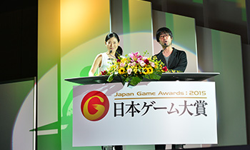
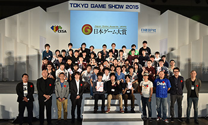
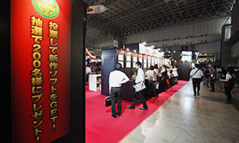
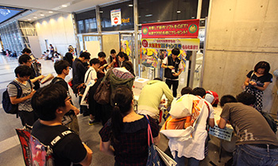

初めてのTGS ～ 一般公開日編 ～

TGS2015の写真を参考に会場の様子や雰囲気を事前に把握しておきましょう。ただしTGS2016は、必ずしも同じではありませんので写真はイメージとしてご覧ください。
日本ゲーム大賞2016「フューチャー部門」について
「日本ゲーム大賞2016」はさまざまな賞がありますが、一般公開日の9月17日（土）には「アマチュア部門」、9月18日（日）には「フューチャー部門」の発表授賞式を行います。


「フューチャー部門」は、TGS2016に出展された未発売のゲームソフトの中から、今後が期待できるタイトルを選出。ビジネスデイを含む来場者による投票（15～17日）が審査の参考にされます。
投票所は、日本ゲーム大賞のブース（3ホール）のほか、会場の出口にも用意し、投票していただいた方のなかから抽選で、受賞した新作ソフトをプレゼントします。

